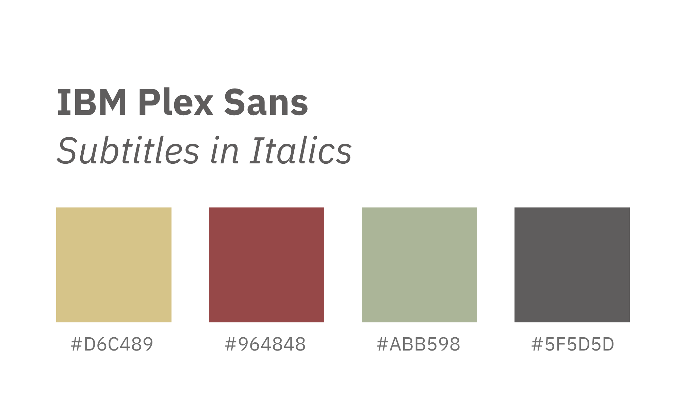
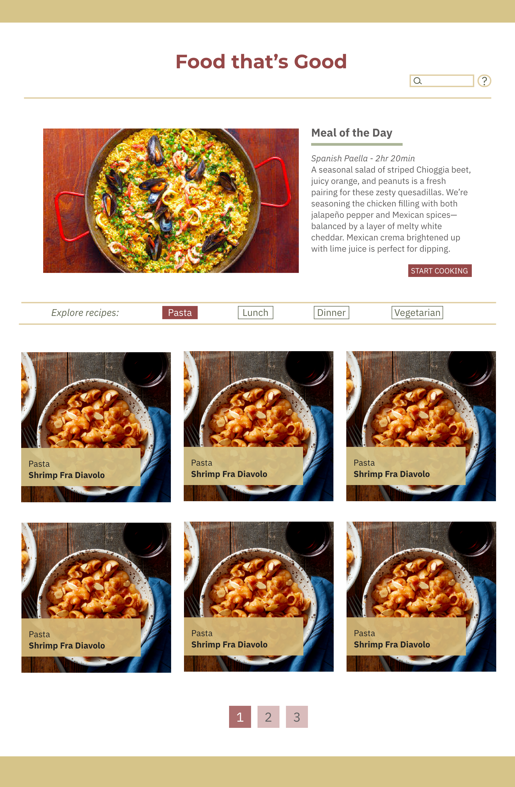

Process and Insights
Design and Wireframes:
For the design process, I drew inspiration from a various different recipe websites and food blogs.
I settled on this set of fonts and colors to make up my style tile. I thought this set of colors looked organic, hearty, and homey, which went along with the "homecooking" kind of feel that the recipes had.

Once I established the color scheme and fonts I wanted for my site, I created wireframes using Adobe XD. Here is an example of the wireframes for the desktop version's home page and recipe page.


The wireframes were a good basis of inspiration, but as I was building my site I noticed I started veering off. One of the changes that I implemented that does not exist in the wireframes is a microinteraction with modals for the search
and help functions. I added two tabs that were fixed to the side of the page. Users could click on one of the tabs and open a modal for "help" or "search" accordingly. I also decided to change the hero image at the top of the home page to
include a collage image of many different meals to look more inviting.
Fonts:
One issue I had throughout the project was getting my files to show properly on another computer. They would show consistently fine on my end, but every time I looked it up on another device they would default to a more standard font.
I did not totally figure out the issue, but I believe it was probably linking my local file correctly. I finally decided to switch the fonts altogether, since the ones I had previously were not Google Fonts and could not easily be imported
into the HTMl or CSS. Once I chose new fonts, they started displaying.
Optimizing Images:
Another insight I had during the process of this project was to utilize online image optimizer tools to reduce the size of the images. Image optimization is important in order for images to load quickly once you load a webpage. If not,
the images take awhile to load, which can sometimes affect how the layout of the whole page is displayed. I used to use Photoshop to optimize images, but it took a long time and was pretty tedious. With the help of online optimizer tools,
I was able to optimize a whole bulk of images at one time.
Organizing the Data:
This step of the process was done with my fellow classmates. We took the 30+ data of recipe .pdf files and inputted the information into a Google Spreadsheet, where we divided the information into rows and columns according to title,
subtitle, images, etc. We established the names and matched the file names so that there would not be any discrepancies when the data had to be pulled.
PHP Code:
Learning how to navigate PHP was an interesting experience with a slight learning curve. I had to remember to really pay attention to the names of my elements to make sure they matched with my database. Making seemingly little mistakes
like typing "title" instead of "tle" really throws the code off and prevents the data from being displayed. There were also typos in the image file names in the database, so those had to be corrected in order to show up. Another problem I
encountered as a looping issue when trying to put together my recipe page and display the steps. The step title and the step details were supposed to alternate or stagger amongst each other, but the way we had set up our spreadsheet did not
allow for this to happen and the way our professor taught in class was not how our database was structured. With the help and guidance of classmates who were in the same boat, we figured out how to troubleshoot this issue by restructuring
our loop.
mySQL:
I encountered a few frustrations when setting up my database in mySQL. I was able to establish my database in the myPHPadmin side and export the .sql file, but when I tried to import it into the BlueHost server database, I got an error
several times. I did some online troubleshooting and restarted the export/import process a couple times and it somehow managed to work.